Managing applications¶
In murano, each application, as well as the form of application data entry, is defined by its package. The murano dashboard allows you to import and manage packages as well as search, filter, and add applications from catalog to environments.
This section provides detailed instructions on how to import application packages into murano and then add applications to an environment and deploy it. This section also shows you how to find component details, application topology, and deployment logs.
Import an application package¶
There are several ways of importing an application package into murano:
From a zip file¶
Perform the following steps to import an application package from a .zip file:
In OpenStack dashboard, navigate to .
Click the Import Package button on the top right of the page.
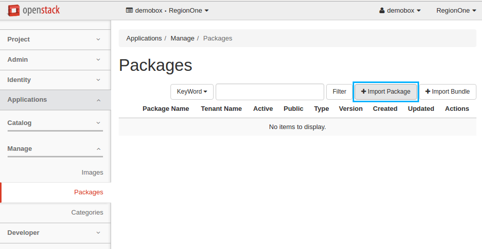From the Package source drop-down list choose File, then click Browse to select a .zip file you want to import, and then click Next.
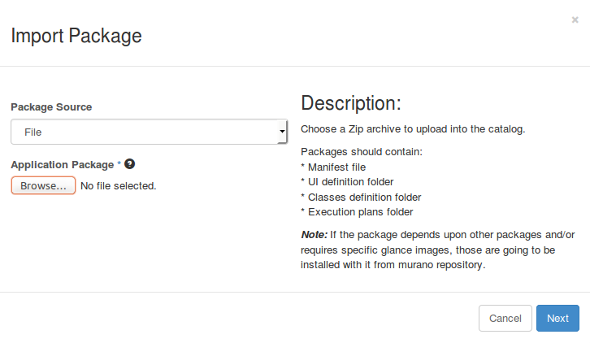At this step, the package is already uploaded. Choose a category from the Application Category menu. You can select multiple categories while holding down the
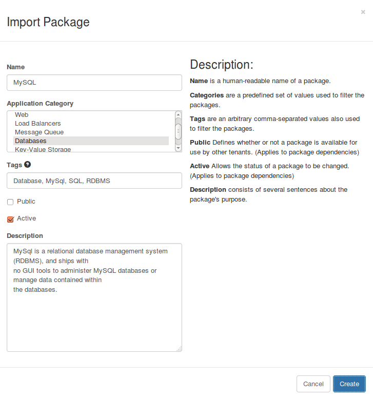Ctrlkey. If necessary, verify and update the information about the package, then click the Create button.
{kind=link}
{kind=link}
{kind=link}
Note
Though specifying a category is optional, we recommend that you specify at least one. It helps to filter applications in the catalog.
From a repository¶
Perform the following steps to import an application package from murano applications repository:
Note
To import an application package from a repository, you need to know the full name of the package. For the packages names, go to http://apps.openstack.org/#tab=murano-apps and click on the desired package to see its full name.
In OpenStack dashboard, navigate to .
Click the Import Package button on the top right of the page.
From the Package source drop-down list, choose Repository, enter the package name, and then click Next. Note that you may also specify the version of the package.
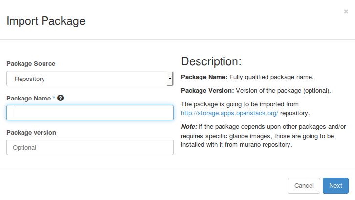At this step, the package is already uploaded. Choose a category from the Application Category menu. You can select multiple categories while holding down the
Ctrlkey. If necessary, verify and update the information about the package, then click the Create button.
{kind=link}
From a bundle of applications¶
Perform the following steps to import a bundle of applications:
Note
To import an application bundle from a repository, you need to know the full name of the package bundle. To find it out, go to http://apps.openstack.org/#tab=murano-apps and click on the desired bundle to see its full name.
{kind=link}
{kind=link}
Search for an application in the catalog¶
When you have imported many applications and want to quickly find a required one, you can filter them by category, tags and words that the application name or description contains:
In OpenStack dashboard, navigate to .
The page is divided into two sections:
- Recent Activity shows the most recently imported or deployed applications.
- The bottom section contains all the available applications sorted alphabetically.
To view all the applications of a specific category, select it from the App Category drop-down list:
{kind=link}
To filter applications by tags or words from the application name or description, use the rightmost filter:
{kind=link}
Note
Tags can be specified during the import of an application package.
For example, there is an application that has the word document-oriented in description. Let’s find it with the filter. The following screenshot shows you the result.
{kind=link}
Delete an application package¶
To delete an application package from the catalog, please perform the following steps:
In OpenStack dashboard, navigate to .
Select a package or multiple packages you want to delete and click Delete Packages.
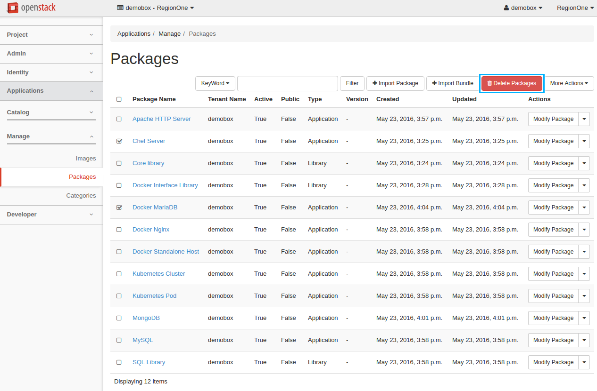Confirm the deletion.
{kind=link}
Add an application to environment¶
After uploading an application, the second step is to add it to an environment. You can do this:
From environment details page¶
- In OpenStack dashboard, navigate to .
- Find the environment you want to manage and click Manage Components, or simply click on the environment’s name.
- Procced with the Drop Components here field or the Add Component button.
Use of Drop Components here field
On the Environment Components page, drag and drop a desired application into the Drop Components here field under the Application Components section.
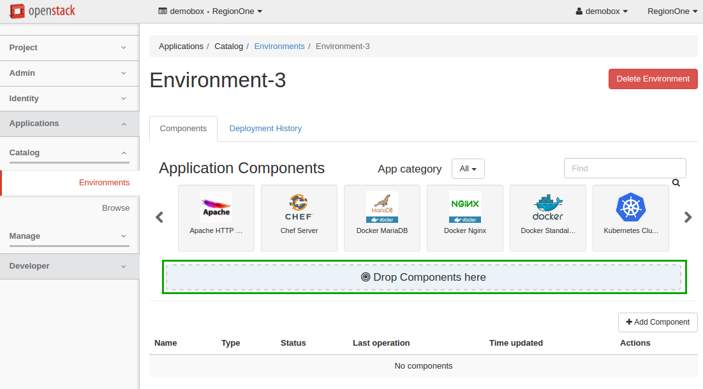Configure the application. Note that the settings may vary from app to app and are predefined by the application author. When done, click Next, then click Create.
{kind=link}
Now the application appears in the Component List section on the Environment Components page.
Use of Add Component button
On the Environment Components page, click Add Component.
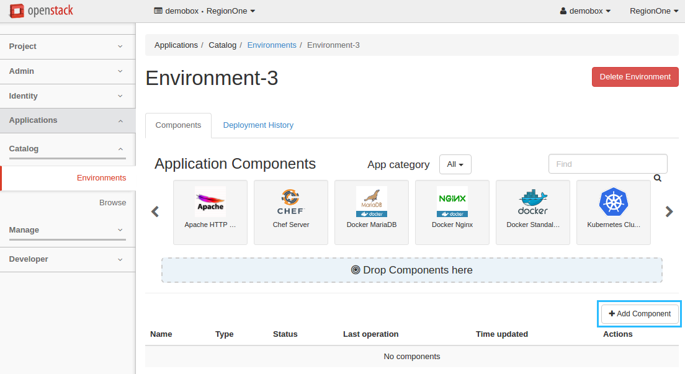Find the application you want to add and click Add to Env.
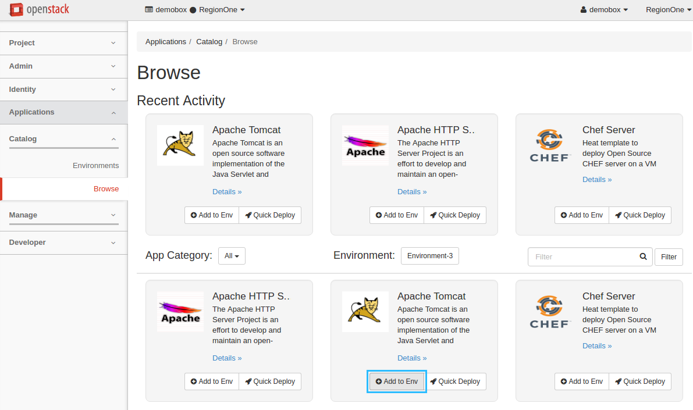Configure the application and click Next. Note that the settings may vary from app to app and are predefined by the application author.
To add more applications, check Continue application adding, then click Create and repeat the steps above. Otherwise, just click Create.
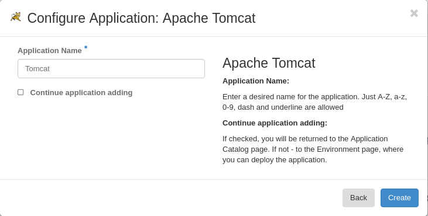Now the application appears in the Component List section on the Environment Components page.
{kind=link}
{kind=link}
{kind=link}
From applications catalog page¶
- In OpenStack dashboard, navigate to .
- On the Applications catalog page, use one of the following methods:
- Quick deploy. Automatically creates an environment, adds the selected application, and redirects you to the page with the environment components.
- Add to Env. Adds an application to an already existing environment.
Quick Deploy button
Find the application you want to add and click Quick Deploy. Let’s add Apache Tomcat, for example.
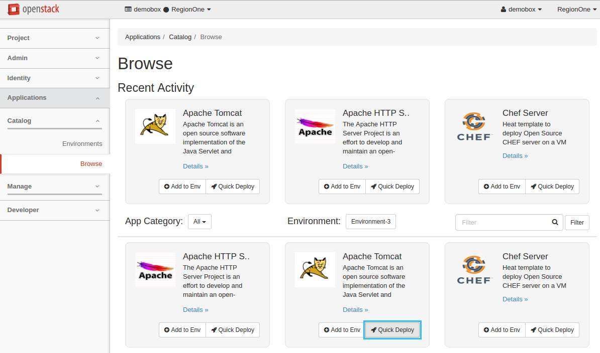Configure the application. Note that the settings may vary from app to app and are predefined by the application author. When done, click Next, then click Create. In the example below we assign a floating IP address.
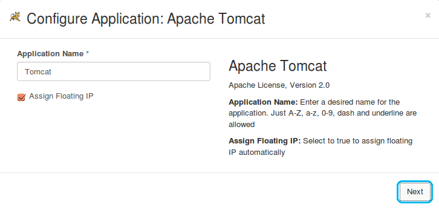
{kind=link}
{kind=link}
Now the Apache Tomcat application is successfully added to an
automatically created quick-env-1 environment.
{kind=link}
Add to Env button
From the Environment drop-down list, select the required environment.
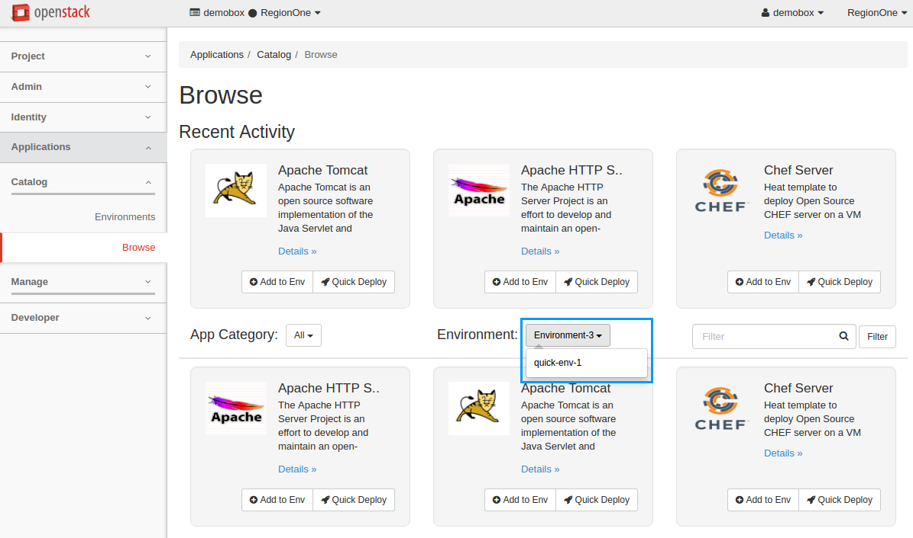Find the application you want to add and click Add to Env. Let’s add Apache Tomcat, for example.
Configure the application and click Next. Note that the settings may vary from app to app and are predefined by the application author. In the example below we assign a floating IP address.
To add more applications, check Add more applications to the environment, then click Create and repeat the steps above. Otherwise, just click Create.
{kind=link}
Deploy an environment¶
Make sure to add necessary applications to your environment, then deploy it following one of the options below:
Deploy an environment from the Environments page
In OpenStack dashboard, navigate to .
Select Deploy Environment from the Actions drop-down list next to the environment you want to deploy.
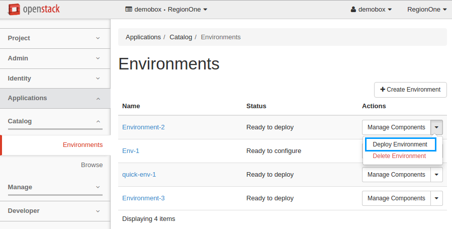It may take some time for the environment to deploy. Wait for the status to change from Deploying to Ready. You cannot add applications to your environment during deployment.
Deploy an environment from the Environment Components page
In OpenStack dashboard, navigate to .
Click the name of the environment you want to deploy.
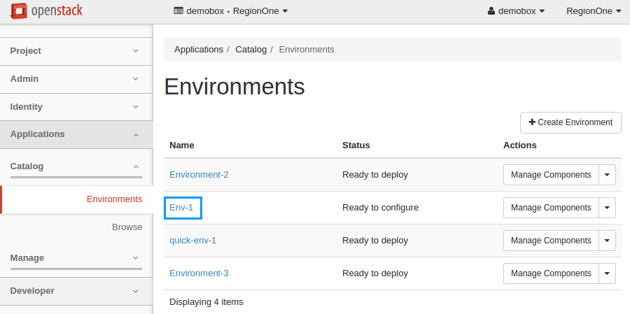On the Environment Components page, click Deploy This Environment to start the deployment.
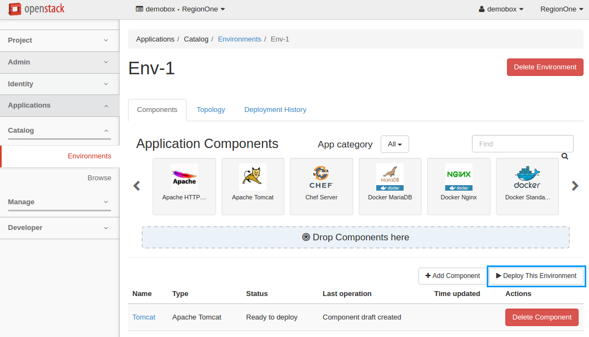It may take some time for the environment to deploy. You cannot add applications to your environment during deployment. Wait for the status to change from Deploying to Ready. You can check the status either on the Environments page or on the Environment Components page.
{kind=link}
{kind=link}
{kind=link}
Browse component details¶
You can browse component details to find the following information about a component:
- Name
- ID
- Type
- Instance name (available only after deployment)
- Heat orchestration stack name (available only after deployment)
To browse a component details, perform the following steps:
In OpenStack dashboard, navigate to .
Click the name of the required environment.
In the Component List section, click the name of the required component.
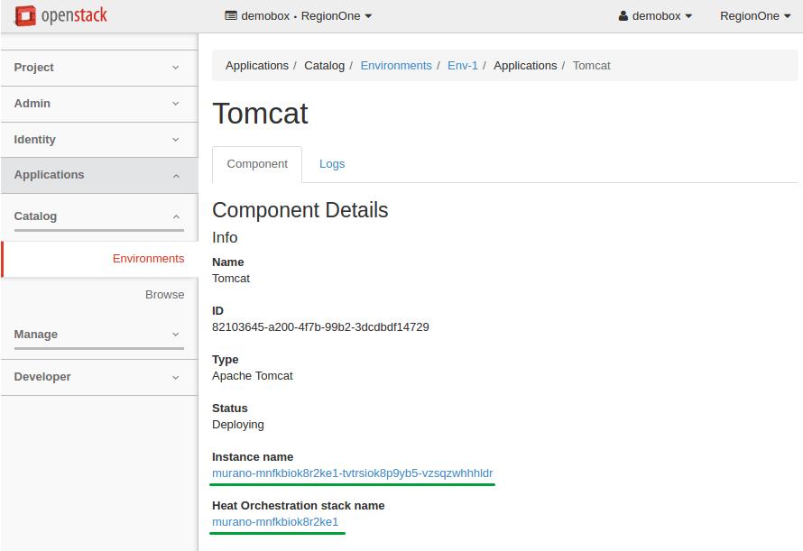The links redirect to corresponding horizon pages with the detailed information on instance and heat stack.
{kind=link}
Application topology¶
Once you add an application to your environment, the application topology of this environment becomes available in a separate tab. The topology represents an elastic diagram showing the relationship between a component and the infrastructure it runs on. To view the topology:
- In OpenStack dashboard, navigate to .
- Click the name of the necessary environment.
- Click the Topology tab.
The topology is helpful to visually display complex components, for example Kubernetes. The red icons reflect errors during the deployment while the green ones show success.
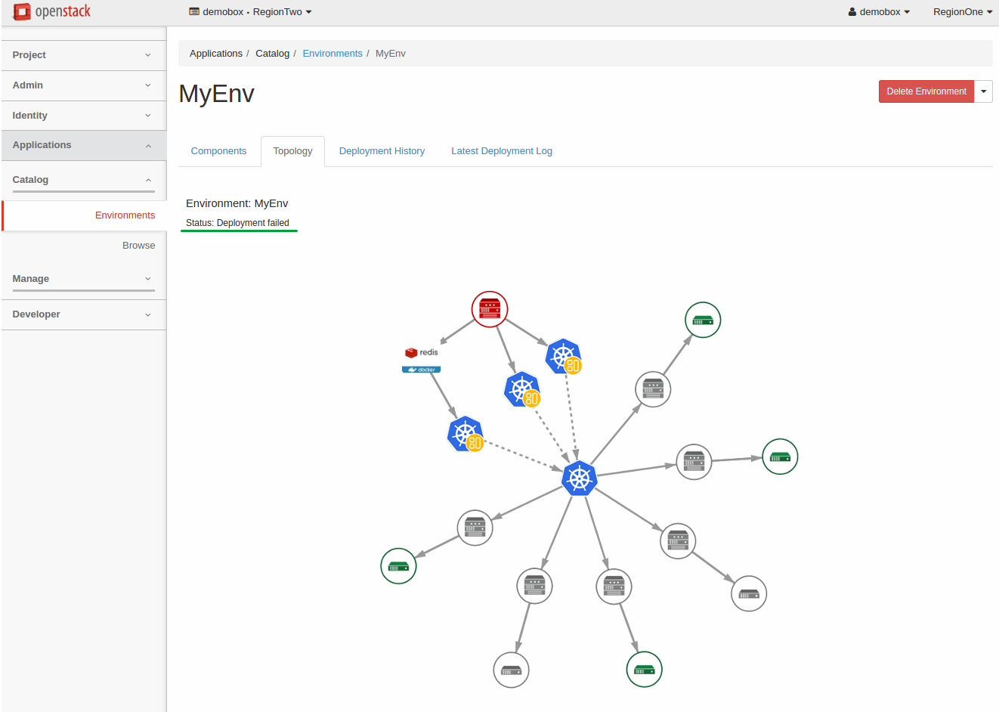{kind=link}
The following elements of the topology are virtual machine and an instance of dependent MuranoPL class:
| Element | Meaning |
|---|---|
| Virtual machine | |
| Instance |
Position your mouse pointer over an element to see its name, ID, and other details.
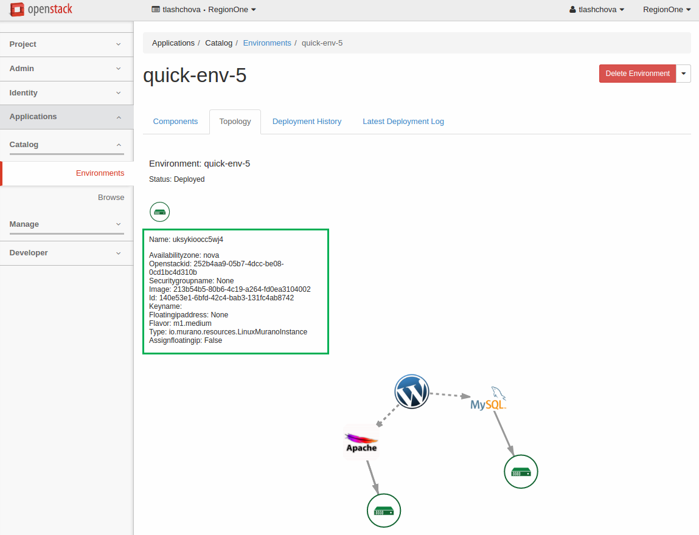{kind=link}
Deployment logs¶
To get detailed information on a deployment, use:
- Deployment history, which contains logs and deployment structure of an environment.
- Latest deployment log, which contains information on the latest deployment of an environment.
- Component logs, which contain logs on a particular component in an environment.
Deployment history
To see the log of a particular deployment, proceed with the steps below:
In OpenStack dashboard, navigate to .
Click the name of the required environment.
Click the Deployment History tab.
Find the required deployment and click Show Details.
Click the Logs tab to see the logs.
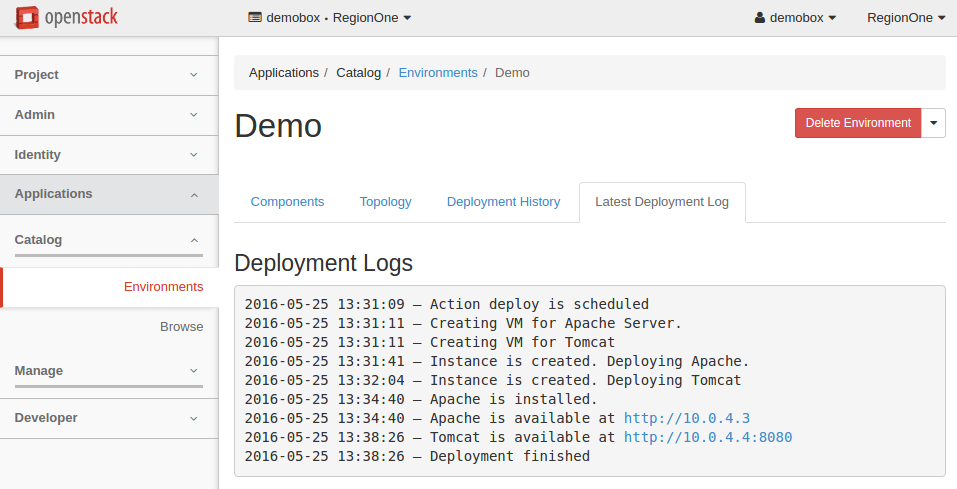
{kind=link}
Latest deployment log
To see the latest deployment log, proceed with the steps below:
- In OpenStack dashboard, navigate to .
- Click the name of the required environment.
- Click the Latest Deployment Log tab to see the logs.
Component logs
To see the logs of a particular component of an environment, proceed with the steps below:
In OpenStack dashboard, navigate to .
Click the name of the required environment.
In the Component List section, click the required component.
Click the Logs tab to see the component logs.
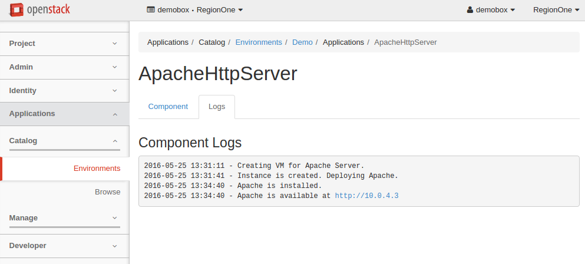
{kind=link}
Delete an application¶
To delete an application that belongs to the environment:
In OpenStack dashboard, navigate to .
Click on the name of the environment you want to delete an application from.
In the Component List section, click the Delete Component button next to the application you want to delete. Then confirm the deletion.
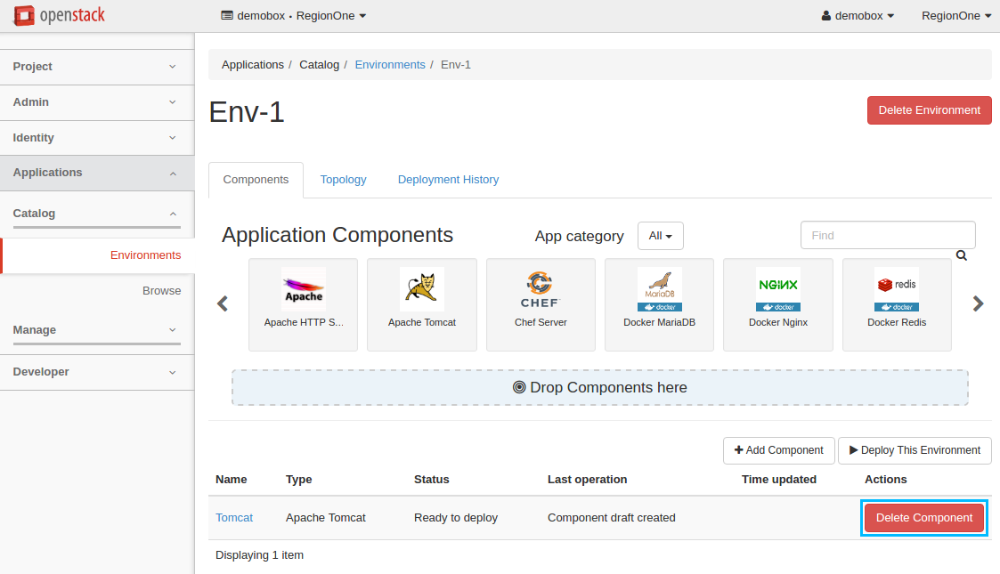
{kind=link}
Note
If the application that you are deleting has already been deployed, you should redeploy the environment to apply the recent changes. If the environment has not been deployed with this component, the changes are applied immediately on receiving the confirmation.
Warning
Due to a known bug in murano as of Kilo release, the OS resources allocated by a deleted application might not be reclaimed until you delete the environment. See the Deallocating stack resources blueprint for details.